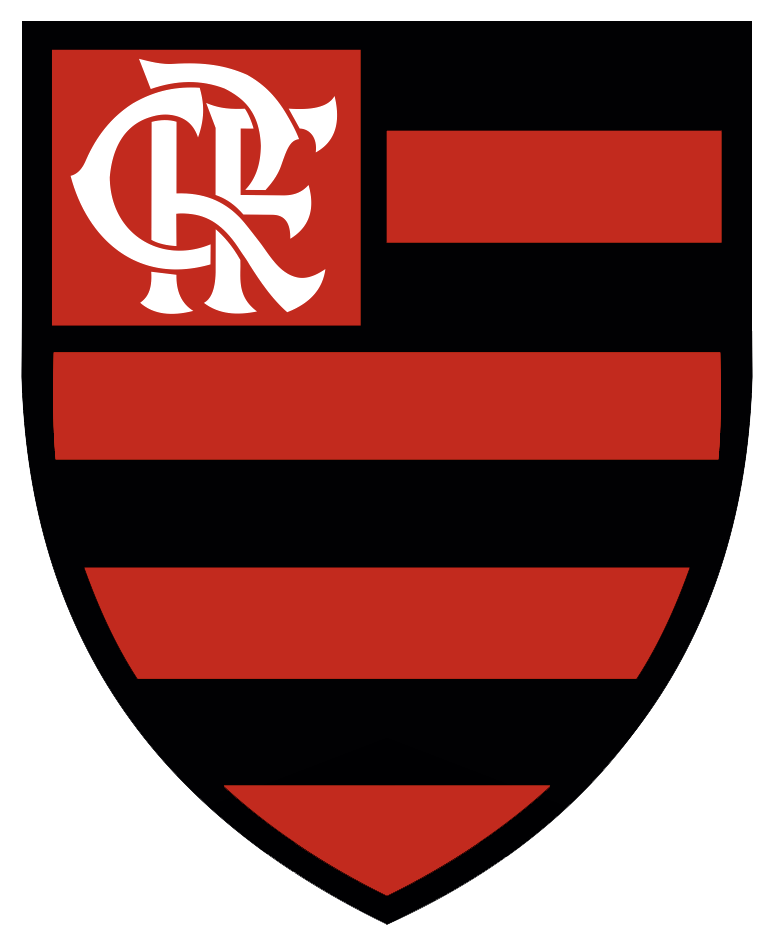
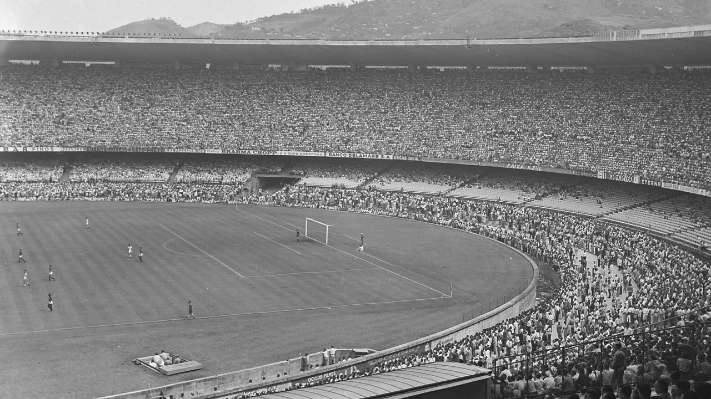

O Clube de Regatas do Flamengo nasceu em 17 de novembro de 1895, no Rio de Janeiro, como um clube de remo. Um grupo de jovens da Zona Sul carioca — entre eles Nestor de Barros, José Agostinho Pereira da Cunha e Mário Spindola — se reuniu para fundar uma agremiação náutica na Praia do Flamengo, bairro que deu nome ao clube.
No começo, o grupo mal tinha dinheiro para comprar um barco: adquiriram um usado, o Pherusa, e precisaram reformá-lo por conta própria. A estreia, em outubro de 1895, quase terminou em tragédia: ventos fortes viraram o barco e os remadores quase se afogaram, sendo salvos por um barco de pescadores chamado Leal. As cores originais do clube eram azul e ouro, representando o céu do Rio e as riquezas do Brasil — só depois de um ano sem vitórias (o que rendeu o apelido de "clube de bronze") é que o time trocou para o vermelho e o preto, cores que se tornariam sua marca eterna.
O futebol só chegou ao Flamengo mais de uma década depois. Em 1911, um grupo de jogadores insatisfeitos com a diretoria do Fluminense — outro clube carioca — decidiu deixar o rival e formar um departamento de futebol dentro do Flamengo, já que o capitão do grupo, Alberto Borgerth, também era remador rubro-negro. A nova seção foi oficializada em 24 de dezembro de 1911.
A estreia oficial aconteceu em 3 de maio de 1912, com uma goleada de 16 a 2 sobre o Mangueira — recorde de gols que resiste até hoje na história do clube. Alguns meses depois, em julho de 1912, aconteceu o primeiro clássico Fla-Flu, vencido pelo Fluminense por 3 a 2, dando início a uma das maiores rivalidades do futebol brasileiro. Em 1914 veio o primeiro título de Campeonato Carioca, já com a camisa listrada em vermelho, preto e branco apelidada de "cobra coral".
Ao longo das décadas de 1920 e 1930, o Flamengo consolidou sua popularidade. Em 1927, o clube venceu uma enquete do Jornal do Brasil que buscava eleger "o clube mais querido do Brasil", superando o rival Vasco da Gama — título que ajudou a construir a identidade do Flamengo como o time do povo. A frase "uma vez Flamengo, sempre Flamengo", criada em um concurso escolar organizado pelo então presidente José Bastos Padilha, viraria parte do hino popular do clube.
Nos anos 1930 e 1940, ídolos como Leônidas da Silva e Zizinho encantaram as torcidas — Leônidas foi artilheiro e melhor jogador da Copa do Mundo de 1938 vestindo o manto rubro-negro. Em 1950, o Flamengo passou a mandar seus jogos no recém-construído Estádio do Maracanã, palco de um dos maiores públicos da história do futebol mundial: o clássico contra o Fluminense em 1963 reuniu 194.603 pessoas, recorde de público em jogos entre clubes.
A fase mais gloriosa da história do Flamengo começou no fim dos anos 1970, com uma geração liderada pelo meia Arthur Antunes Coimbra, o Zico — até hoje considerado o maior ídolo do clube. Ao lado de jogadores como Júnior, Adílio e Nunes, o time conquistou o primeiro Campeonato Brasileiro da história do clube em 1980.
Isso deu ao Flamengo vaga na Copa Libertadores da América de 1981, disputada pela primeira vez. Depois de vencer o Cobreloa, do Chile, em três jogos decisivos, o clube conquistou seu primeiro título continental. Menos de um mês depois, em 13 de dezembro de 1981, veio o jogo mais lembrado da história rubro-negra: a vitória por 3 a 0 sobre o Liverpool, da Inglaterra, na final da Copa Intercontinental, em Tóquio — com dois gols de Nunes e um de Adílio, numa atuação de gala de Zico. O Flamengo se tornou campeão mundial de clubes.
Os anos seguintes trouxeram mais dois Campeonatos Brasileiros (1982 e 1983), fechando o que os torcedores chamam de "era de ouro" do clube. Zico encerraria a carreira em 1990 como maior artilheiro da história do Flamengo, com 508 gols marcados.
A década de 1990 teve o quinto título brasileiro (1992) e a chegada de estrelas como Romário, Sávio e Edmundo — o time apelidado de "ataque dos sonhos". Mas o clube também viveu uma longa crise financeira, que se estendeu pelos anos 2000, período em que os títulos mais importantes foram a Copa do Brasil (1990, 2006 e 2013) e alguns campeonatos estaduais.
Em 2009, sob o comando do técnico Andrade, o Flamengo voltou a ser campeão brasileiro após 17 anos de espera, em uma virada dramática na última rodada. A década seguinte, porém, foi marcada por instabilidade em campo — e, em 2019, por uma tragédia: um incêndio no centro de treinamento Ninho do Urubu matou dez jovens da base do clube, data que a torcida passou a homenagear cantando no décimo minuto de cada jogo em casa.
2019 também foi o ano mais vitorioso da história do futebol do Flamengo. Sob o comando do técnico português Jorge Jesus, contratado no meio da temporada, e impulsionado por jogadores como Gabriel Barbosa (Gabigol), Bruno Henrique e Arrascaeta, o time encantou o país com um futebol ofensivo e goleador.
Na final da Libertadores de 2019, em Lima, o Flamengo perdia para o River Plate até os minutos finais — até que Gabigol marcou duas vezes em três minutos e virou o jogo para 2 a 1, conquistando o segundo título continental do clube, 38 anos após o primeiro. No dia seguinte, o time também confirmou o título brasileiro daquele ano, batendo recordes de pontos, vitórias e gols na era dos pontos corridos.
Os anos seguintes trouxeram mais conquistas: bicampeonato brasileiro em 2020, uma nova Copa do Brasil em 2022 e uma terceira Copa Libertadores, também em 2022, contra o Athletico Paranaense. Em 2025, o clube venceu sua quarta Libertadores, batendo o Palmeiras na final, além de um novo título brasileiro no mesmo ano — reforçando a posição do Flamengo como um dos clubes mais vitoriosos do futebol sul-americano no século XXI.
Estádio do Maracanã, a casa do Flamengo desde 1950:
